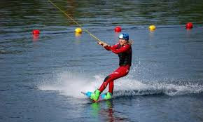

Wakeboarding is a water sport in which the rider, standing on a wakeboard (a short board with foot bindings), is towed behind a motorboat across its wake and especially up off the crest for aerial maneuvers.[1] The rider is usually towed by a rope, but can also be towed by cable systems and winches, and other motorized vehicles like personal watercrafts, cars, trucks, and all-terrain vehicles.
Wakeboards are used for competition and pleasure, including freestyle wakeboarding, X-games, and wakeboard park. The gear and wakeboard boat used are personalized to each individuals’ liking. With diligent practice and training a rider will be skilled enough over time to start learning and performing tricks.
Wakeboarding was invented by surfers who were looking for an alternative to surfing when the waves were down and the water was calm. When the wakeboard was invented it was first called a "Skurfer" which was named by Tony Finn in 1985 because the board is a combination of a surfboard and a water ski. The first board made in the late 80's was introduced by the O’Brien company, which is a water ski manufacturer.
The O’Brien company introduced the Hyperlite board that was the first “compression-molded neutral-buoyancy wakeboard”. This board made starting in deeper water easier and wakeboarders were able to turn the board more easily. The introduction of this Hyperlite board was a successful invention by the company that took off in the market and has continued to show success. A variety of boards have been made since then that are more curved and compacted creating a smoother ride.